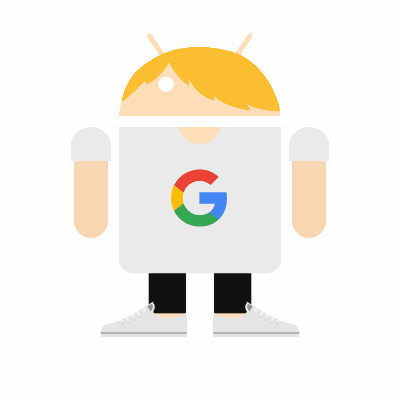

Hello.
I'm <kjbrobocat8>, and I like to code.
Lightning Video Chat
Lightning Video Chat is a video chat app made by me using Scaledrone and WebRTC.
If you are using Firefox, join through Firefox first then other browsers.
What's New
New and improved ChatIt
ChatIt v2.0 is in development!
agaudana
@agaudana is someone who I like to code with.
More repositories
I am always finding new languages and stuff to code.
I will probably post on GitHub
.
Lightning video chat
A simple video chat app.
"Lightning" by snowpeak is licensed under CC BY 2.0

💬 Chat.It
An (Also) Simple Chat Room!
Dash A simple Dashboard using Material Design.
And Finally, Asterisk Maps!
Asterisk Maps is a clone of Google Maps Using Mapbox's API.